Interactive t-a-p Analysis
I’ve left this page up so you can see what the shiny app does, but it is now out of sync with the development of the tapApp package. Once the package documentation is complete, I’ll fix the shiny app code and the documentation on this page. If want to run this app in the form presented below, you can do it with the tapModel demo release.
1 Introduction
The R programming language has been extended to include the creation of interactive apps using a framework called Shiny. You’ll need to install the libray(shiny) to run it, with install.packages("shiny").
Two separate interactive applications are available for the t-a-p model. One of them is included in the tapModel R package. Once the package is installed, you can open the app with tapModel::launchApp(). This is a limited version of the app that does not provide for Bayesian analysis. The full version of the app can be installed as a stand-alone R project from github. There are instructions there on installing it. To take advantage of the Bayesian estimation methods, you’ll need to install additional R packages and tools. The Bayesian estimation is done with a Markov chain Monte Carlo (MCMC) process of sampling from a probability distribution. For that, the Stan programming language is used, with the stancmdr package. That link has installation instructions. The library LaplacesDemon is also needed to compute the modes of distributions.
1.1 Basic Functions
The simplest way to get started is with the tapModel library. It provides these functions:
Load data from comma-delimited value (CSV) files that are formatted as
Outcome ratings in columns, where multiple traits have rating data, one subject per row, and multiple traits per subject. For example if a jury of reviewers rates a musical performance on style, technique, and musicality, each performer would have multiple rows, each with those three columns.
Raters in columns, where the same type of jury data can be reformatted to have a Category column (style, technique, musicality), and each rater appears as a single column. In this format each subject only appears on a single row.
Long format, where the subject ID, optional category, and rating appear as the three columns of the CSV.
Simulate a data set by specifying the t-a-p parameters and sample sizes.
Estimate t-a-p parameters from a (simulated or real) data set.
Estimate ordinal t-a-p parameters from a data set. This assumes that the rating scale is sorted alphabetically in the correct order. For example, a numerical survey response scale is usually in the right order, but the labels may not be (“neutral” doesn’t sort in the middle of “strongly agree” and “strongly disagree”). You may need to adjust the rating labels accordingly, e.g. “1 - strongly disagree”, … “5 - strongly agree”.
1.2 Advanced Functions
If you launch the app from the github source code and have the stancmdr package installed, some additional features become available. These derive from using Bayesian modeling written in the Stan programming language to make parameter estimates from maximum likelihood models built to reflect variations of the t-a-p model. Markov chain Monte Carlo (MCMC) methods are used to explore the model’s probability distribution, which you can then see within the app. This is advantageous because a parameter estimate may have a bimodal distribution when parameters are not cleanly identifiable. In those cases relying on an average for a parameter estimate is a mistake.
Another advantage of MCMC’s numerical simulation is that the basic t-a-p model can be extended to include more parameters without being rigidly tied to the binomial mixture model. Finally, the simple methods used for three-parameter estimation will fail when confronted with many parameters. In the interactive application, there is limited ability to add parameters. For complete flexibility, Stan scripts are provided in the chapter on hierarchical models.
The following sections describe the functionality of both the package app and the stand-alone version, with the latter’s additional features marked as “advanced.”
2 Load Data
The minimum data required to get started is to have a set of discrete classifications (text or numerical) that identifies a unique subject for each rating. Because the ordinal analysis assume that ratings will sort in a reasonable way, you may want to reformat rating responses accordingly. For example, a 1-5 scale will sort appropriately, but “strongly disagree” to “neutral” to “strongly agree” will not. In that case, you can add a number in front, like “1-strongly disagree” to force the sorting to be correct.
In practice, the number of unique ratings is usually small, like a 1-5 scale for a product rating or rubric for an educational goal. It’s also possible to include a dimension as a column. For example, a survey to evaluate a service might include a rating for promptness, friendliness, and overall satisfaction. An educational rubric for student writing might include language correctness, style, and audience awareness. This can be accommodated within the data loading process, so it’s easy to switch from analyzing one aspect (dimension) of the data to another without exiting.
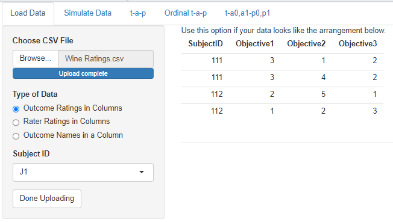
In the app, the dimension, or category, of the rating is called an outcome or objective. The first selection under Type of Data illustrates this data shape. In this case you only need to specify which column is the (required) subject identifier. This selection would be used, for example, if you had customer survey data where each row corresponded to one store location, which was identified by a unique name or number. The columns would correspond to the questions on the survey, with the numerical or text responses under them.
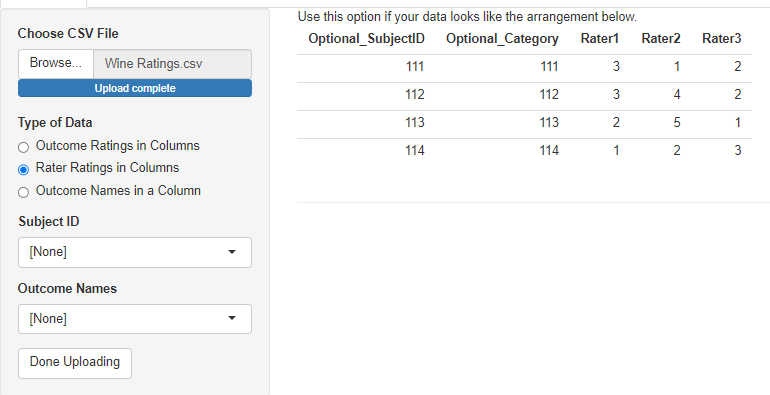
The second data type allows for raters to each have their own column. For the purposes of the analysis done in the app, the raters don’t really need to be identified uniquely in the columns. It only matters if you do a hierarchical analysis where each rater gets an individual accuracy parameter. See the chapter on hierarchical models for more on that. It’s too complicated for the app. It’s required that all ratings for a subject are found in a single row in this format, so the subject ID is optional. The category column is also optional, and will be blank if there’s only one type of rating being done.
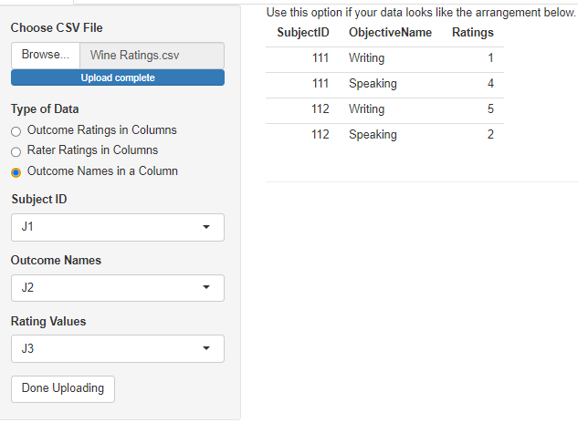
The third option is for “long” data, where there are only three columns: one for a subject ID, one for a dimension (objective, outcome), and one for the rating. Subject IDs will be repeated, as will the values of the dimension column. If there is only one dimension, that column still needs to exist, but it can be constant.
Once the data has loaded, you’ll see a summary of the columns. I’ll use the wine ratings that are included in the tapModel package to illustrate.
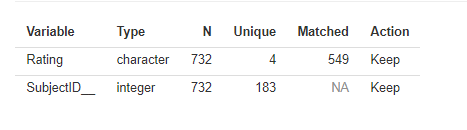
This summary can be used to check that the columns have been loaded correctly. Here we can see that the Rating column has four unique values, which is correct, and that there are 549 matched ratings. Here “matched” means that the subject was rated at least twice, not that the ratings themselves had the same value. Unmatched ratings–those for which a subject only has a single rating–cannot be used for the statistics. The SubjectID__ column is added automatically, even if your data doesn’t have a subject ID. The number of unique values should correspond to the number of subjects in your data. The Action column shows which columns are kept for the analysis. If the data loader can’t tell what the column is for, it will be discarded. This may be an indication that you chose the wrong loading specification.
3 Simulate Data
The t-a-p model can be used to generate data, given specifications for the parameters. This is useful for testing that the estimation algorithm works as intended, and as an interactive means to better understand the binomial mixture distributions that result from the t-a-p model assumptions.
The parameters available to set are:
Number of subjects. Not all values are available since the slide skips some values.
Number of raters, the same for each subject
\(t\), the proportion of subjects that are in reality Class 1
\(a\), the average rater accuracy as defined in the t-a-p model
An option to allow two parameters for accuracy, \(a_0\) and \(a_1\). See the chapter on the Kappa Paradox for more on that idea.
A checkbox to automatically set \(p = t\), the unbiased rater condition.
\(p\), the proportion of inaccurate ratings assigned to Class 1
If the option to expand \(a\) into two parameters is checked, another option to do the same for \(p\) will appear.
Data type: the “exact” option attempts to exactly produce the binomial mixture distribution, and the “random” option instead samples from the distribution.
The last option listed above provides a way to understand the effect of sampling on the simulated data. Statistical methods often assume that a true probability distribution exits, and that data points are drawn (“sampled”) from that distribution. The smaller the data set (sample size), the more random deviation there will be in the empirical distribution of the data (like a histogram of values) and the true distribution. The idea of bootstrapping is to repeatedly sample from a distribution to see what results.
3.1 Exploring Binary Mixtures
If you’re starting to use the resources on this site to analyze real data sets, it’s a good idea to develop an intuition for the assumptions. The decision tree that starts with the true class, proceeds to accuracy and then randomness, results in a particular pattern of ratings: the collection of true Class 1 subject ratings will look different from the Class 0 collection as long as accuracy is greater than zero. On average, there should be more Class 1 ratings for true Class 1 subjects, and the gap between the average Class 1 and Class 0 ratings will increase as accuracy increases.
To see this effect, increase the sample size and number of raters (top two sliders) to the maximum, leave the rest of the sliders alone and generate the data.
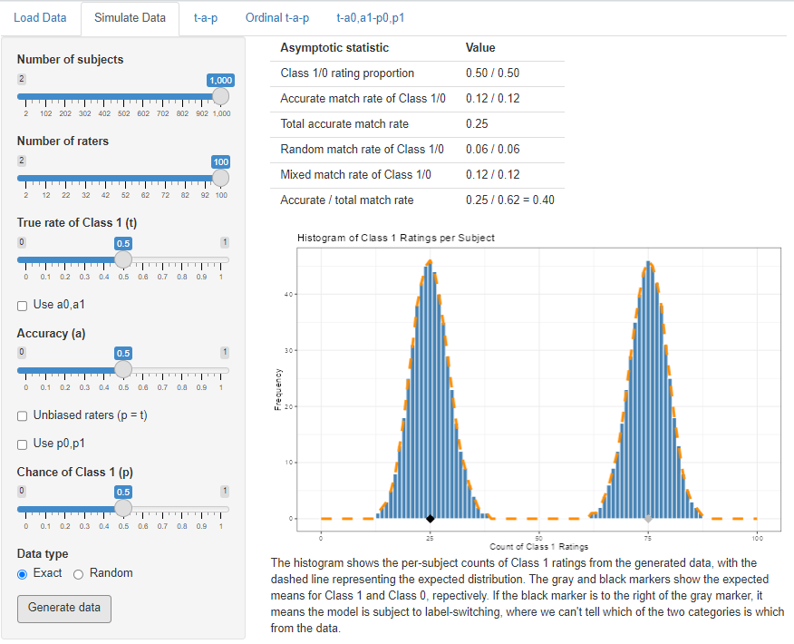
The table at the top of the display gives statistics for the model specification, which may vary from the actual samples if the Random option is chosen. These correpond to the statistics found in the Kappa chapter. The class proportions in the first row are the \(c\) and \(\bar{c}\) statistics, the match rates are \(a^2\) and \(\bar{a}^2\), and total match rate is the sum. These last two rows will be different calculations if individual accuracies are used. The random match rate is \(m_r = p^2 + \bar{p}^2\) unless the individual parameters are used. The mixed rate is \(m_x\).
The shape of the rating distribution is a histogram of the counts per subject of Class 1 ratings per subject. The true Class 1 cases comprise the right bump, since accurate ratings add to the number for each subject half the time (since \(a = .5\)). On average, true Class 1 cases are receiving 75/100 ratings of Class 1. The true Class 0 cases–the left bump in the histogram–only ever receive inaccurate ratings of Class 1. The difference between the two peaks is 50, and that’s because 50 = .5(100), or rater accuracy times the number of raters. The more accurate the raters are, the further the two bumps will be apart.
If you dial in different specifications for the three parameters, you’ll quickly develop an intuition for how these models work. For example what happens if we leave everything the same, but change to \(t = .8\)? You should see that changing the truth parameter only increases the pile of Class 1 ratings; it doesn’t change where they are. This is the “mixture” parameter in the binomial mixture. We already know that \(a\) represents the average amount of Class 1 votes between the two bumps in the histogram, but trying out different values of \(a\) will allow you to visualize that.
The default settings of .5 mean that \(t = p\), the unbiased rater case (see the chapter on Kappa for more on that). If you change the sliders so that \(t \ne p\), you can see the effect of bias on the rating distribution.
For all of these cases, you can switch to the next tab in the app (the one labeled “t-a-p”) to see if the solver can recover the correct values of the parameters you specified at data generation.
3.2 Feasibility Study
The data simulator can be used for a feasibility study (see power analysis). Suppose a group of graders is to read and evaluate student writing samples as passing or failing. If there are anticipated to be 21 subjects, how many raters for each would we need to be able to assess rater accuracy with a t-a-p model? If we guess that about 80% of the students should be passing, and–based on other data–that rater accuracy is around 50%, we can try varying numbers of raters to see how well the parameters can be recovered.
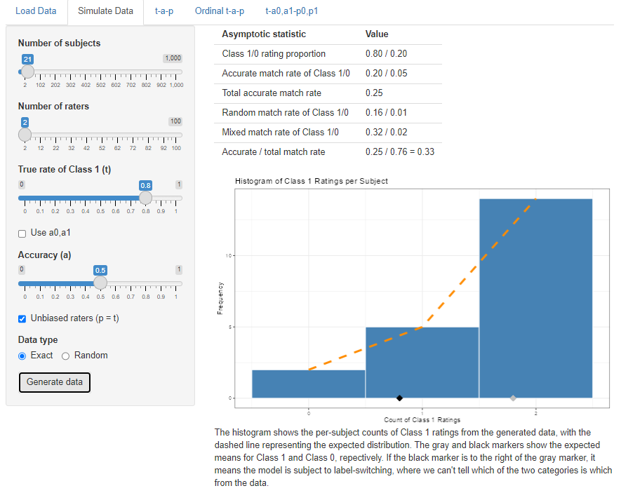
It’s less obvious in this distribution how we might separate out the Class 1 from Class 0 cases, and the question is whether or not the solver can recover the parameters. If not, then it’s worth considering the design of the anticipated study.
3.3 Additional Parameters
As discussed in the chapter on the Kappa Paradox, it’s possible to expand the t-a-p model to include \(a\) and \(p\) parameters that are estimated separately for Class 1 and Class 0 cases. These parameters can be set by using the options
Use a0, a1, which creates the two sliders and unlocks the next option:
Use p0, p1, which creates those two sliders
With that much flexibility over the probability distribution, it’s possible to create non-identifiable data sets, where the Class 0 mean is larger than the Class 1 mean. In those cases there will effectively be two solutions to the expanded t-a-p model, one with the Class 1 mean to the right (as normal) and one to the left. Any use of the full parameter set should be assumed to be non-identifiable, no matter where the class means lie. Analyzing these models requires the Bayesian methods included in the advanced features. You can, however, generate data from the complex model and then see how the three-parameter t-a-p solver does at finding a plausible solution.
4 The t-a-p Solver
The third tab on the application takes the data set that has been loaded or simulated and estimates the three model parameters from it. I’ll use the wine ratings to illustrate.
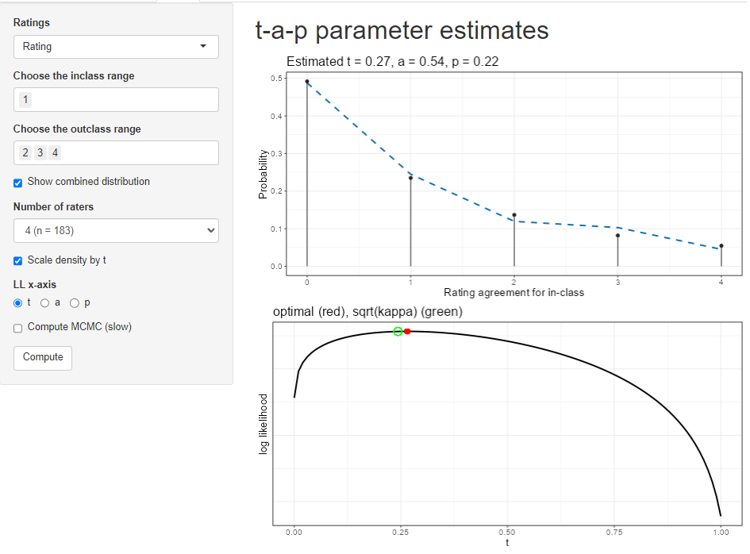
The options on the page are:
Ratings: choose which dimension (if there are multiple ones) to use for the ratings. See the description of the data loading tab for more on what is meant by “dimension” here.
inclass range: Of the values in the ratings column, which ones should be considered Class 1? Class 1 will be referred to as the “inclass” sometimes.
outclass range: Which values are Class 0? You can omit values if you want, but it defaults to the complementary set of non-inclass values.
Show combined distribution. By default, the top plot will show the total distribution of Class 1 ratings over the subjects. If you uncheck the box, the plot will separate the inclass from the outclass distribution.
Number of raters. A real data set can have a different number of raters per subject. The plot can’t easily show all that data, so you’ll have to pick which number of raters is shown on the plot. If the wine data had only three raters for some of the wines, we could use this selector to flip back and forth between the four-times-rated wines and three-times-rated wines.
Scale density by t. Recall that the binomial mixture’s mixing parameter is \(t\). If this box is checked and the “Show combined distribution” box is unchecked, the individual Class 1 (inclass) and Class 0 (outclass) distributions will be shown as scaled appropriately for \(t\). If you want to see the shape of the distribution, sometimes it’s useful not to scale it by \(t\).
LL x-axis. The solver uses maximum likelihood estimation, which produces a log likelihood (LL) value for each combination of parameters. The second plot shows the log likelihood graph near the solution, and you can use the radio button to choose which parameter you want to inspect.
Compute MCMC (slow). This is an advanced function, only available in the full application. It uses Bayesian estimation to create a distribution of the likelihood for each parameter. This adds another plot and augments the second plot with a kind of confidence band.
Clicking on the Compute button generates the results. If you enable the MCMC box after computation, you’ll need to run it again to execute the Bayesian analysis.
4.1 Interpreting Results
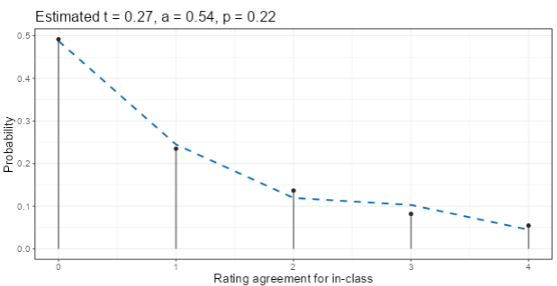
The top display after clicking Compute gives the estimates for the three parameters at the top of a plot. For the wine ratings with Class 1 = {1} and Class 0 = {2, 3, 4} is shown here. That choice is asking the question “how well can the judges distinguish the lowest quality wines from the rest?” The estimate is that 27% of the wines are actually Class 1 (a rating of 1), that rater accuracy is 54%, and that when random assignments are made, Class 1 is chosen 22% of the time. Since \(t = .27\) is close to \(p = .22\), the ratings are nearly unbiased in the sense discussed in the Kappa chapter.
The dashed line in the plot is the expected distribution of Class 1 ratings per subject. The vertical black lines with dots (lollipops) show the actual (empirical) distribution from the data. The extent to which these two agree is a measure of model fit. In this example, there are four raters for each subject (each wine), so there are a maximum of four ratings of Class 1 (the lowest quality rating of 1, as we specified with the selectors). The agreement between model and data looks better for the 0 and 1 counts than for the 2, 3, and 4 counts, implying that the model fit is better for higher ratings (Class 0).
We can separate the model’s distributions for the two classes by unchecking the box “show combined distribution.” The box “scale density by t” is checked as well.
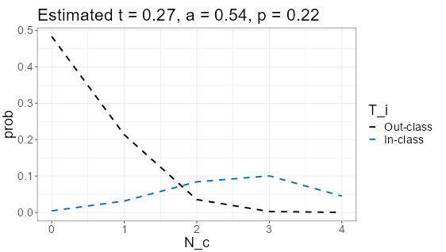
The outclass (Class 0) is modeled by the t-a-p coefficients with a spike at zero, meaning that by far the mostly likely number of Class 1 ratings in cases where the subject (the wine) is truly Class 0 is that no Class 1 ratings are assigned by the four raters. Translating that back to the original question, it means if the wine should, in truth, be rated as 2, 3, or 4 on the scale, it’s quite likely that all four wine judges will assign one of those ratings instead of a 1. In statistics notation, the spike at zero would be written as
\[ Pr[\text{all wine ratings > 1} | \text{wine is actually 2, 3, or 4 quality}] = .48. \]
On the other hand, if the wine is, in truth, a quality rating 1 wine, the ratings are not as unanimous. The most likely case is that three of the four judges will assign a 1 rating (what we’re calling Class 1, or in-class), and it’s a mound-shaped distribution rather than the spike as for Class 0.
The average rater accuracy is the difference between the averages for the two distributions shown, after dividing by the number of raters (4). Estimating from the plot, the mean of Class 0 is about .5, and the mean of Class 1 is about 2.7, for a difference of 2.2. Dividing by four gives .55, which is quite close to the numerical estimate of .54.
It sounds contradictory, but raters can be better at classifying Class 0 than Class 1, as it seems to be in this case. We could try splitting the accuracy parameter into two separate ones to improve model fit. This is described in the chapter on the Kappa Paradox.
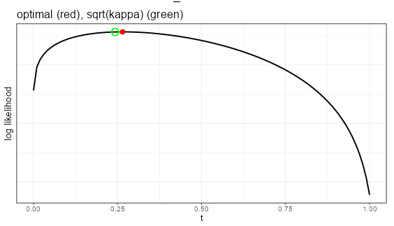
The second plot shows the shape of the log-likelihood for each of the parameters. It ranges over [0,1] for the selected parameter (here it’s \(t\)), while holding the other parameters constant at their estimated values (here it is \(a= .54\) and \(p = .22\)). The red marker shows the model estimate, which should be at the highest point on the graph. The green circle illustrates where the Fleiss kappa solution would be. That assumes unbiased raters (see the chapter on the kappas). Here, there’s not much bias, so the Fleiss kappa estimate is close to the optimal one.
If the MCMC results have been generated, the log-likelihood plot will be augmented with an illustration of the confidence interval around the mean value.
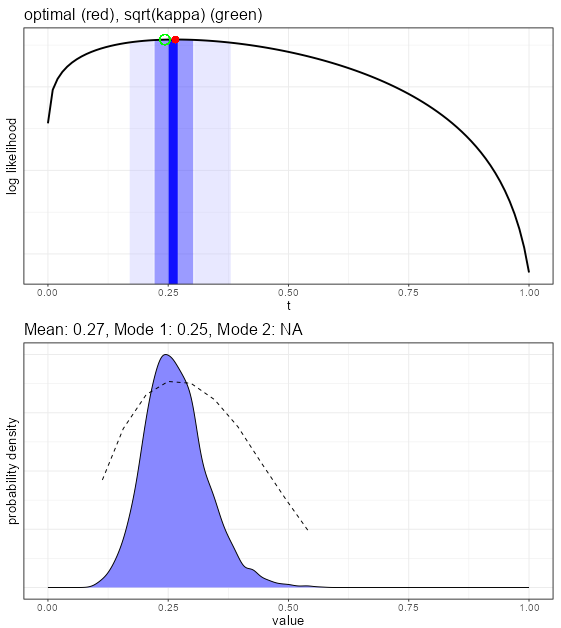
Using the advanced features, a Bayesian estimate for each of the parameters is created, which gives more insights into the convergence properties of the parameter estimates. The top plot in the figure above shows the shading for the middle 5%, 50%, and 95% of the distribution shown in the bottom plot. The bottom plot gives the smoothed density function of the draws from the MCMC exploration of the likelihood space for this parameter. We want to see a normal-like (mound shaped) density, as is the case here. Sometimes this density is pushed up against the edge at zero or one, or can even be bimodal. In those cases, it is probably better to use a mode rather than the mean value for the estimate.
The dashed line in the plot is the average log likelihood for each of the values. Generally we’d like to see the peaks coincide.
5 Ordinal Analysis
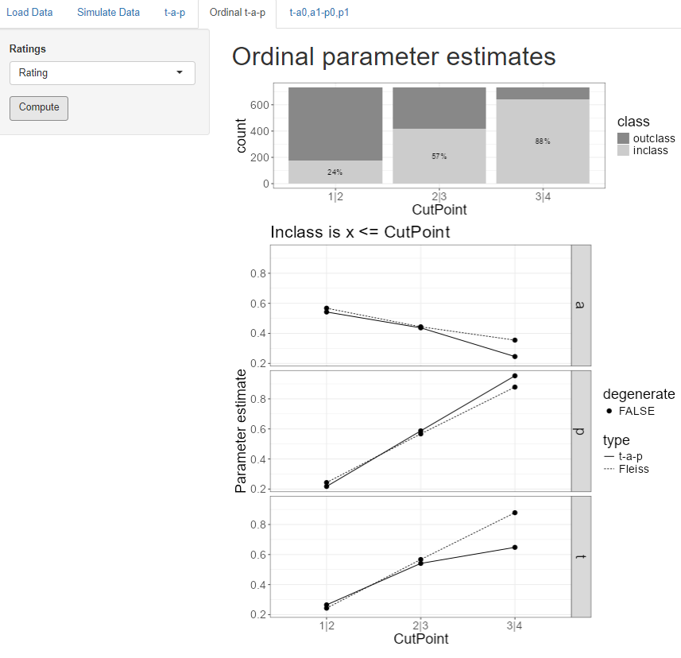
The t-a-p tab only works with binary categories, but we often have rating scales like “poor” to “excellent” or “strongly disagree” to “strongly agree” that have more than two values and can be assume to be ordered in intensity. A common way to understand such “ordinal” scales is to divide the scale at each intermediate point, which we’ll call a cut point.
The “ordinal t-a-p” tab is for analyzing ordinal rating scales using this cut point idea. If a scale is 1 through 5, there are four cut points. The first one separates ratings of 1 from those of 2-5, which we’ll denote by “1|2” to illustrate where the division happens. The last cut point for the 1-5 scale is 4|5, separating the 1-4 ratings from the 5 ratings. In each case, we divide the whole scale into two parts, so it becomes binary for each cut point.
The stacked bar plot at the top of the screen shows the proportions of the inclass (Class 1) and outclass (Class 0) for each cut point. The inclass is always the leftmost set of the division, so for the 1|2 cut point on the plot, the Class 1 (inclass) comprises ratings of 1, and the Class 0 (outclass) is ratings of 2, 3, or 4.
The selector on this screen allows a dimension (or objective, outcome) to be chosen if more than one are present. Clicking on the Compute button then cycles through each cut point to estimate t-a-p parameters for that binary division and summarizes the results on the plots.
The t-a-p estimates are the solid lines on the plots, one plot for each parameter. The dotted lines show the solution if the assumption is made that raters are unbiased (the Fliess kappa). If one of the parameters is estimated to be zero or one, that point is flagged as “degenerate,” meaning it probably can’t be trusted.
In the case of the wine ratings, average rater accuracy drops as the cut point moves to the right, implying that the lower quality ratings can be more reliably identified than the higher quality ratings. This might be the case if there are common physiological responses to the lower quality wines, but the highest rating is more subject to individual preferences.
From the plot at the top of the display, we can see that raters assigned ratings of 1-3 88% of the time (look at the 3|4 cut point). However, in the parameter estimates, the true rate of 1-3 ratings is estimated to be about 65%. This difference means that the raters are biased against assigning the 4 category (a “gold medal” on the original rating scale).
6 More Parameters
The last tab on the application is an advanced feature only available when the Bayesian methods are installed. These can also be used in scripting via the tapModel R package.
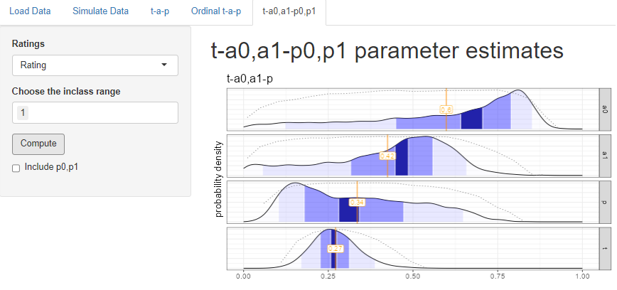
Recall that when we split the wine ratings at 1|2, so that Class 1 = {1} and Class 0 = {2,3,4}, we found that the overall accuracy was .54, and that the shape of the two binomial distributions suggested that accuracy was higher for Class 0 than Class 1. The same analysis was done here, but allowing accuracy to have two parameters, one for each class. The estimates show that indeed the model fit is improved when \(a_0\), the Class 0 accuracy is considerably higher than the \(a_1\) Class 1 accuracy. when looking at the plots, look at the mode (highest point) rather than the mean.
Be aware that adding the extra parameters may make the model non-identifiable, meaning there might be more than one solution or near-solution. This can show up in the log likelihood plots shown above. For example the long distribution for \(p\) suggests that it might be better off split into two parameters, which we can do by checking the box under Compute.
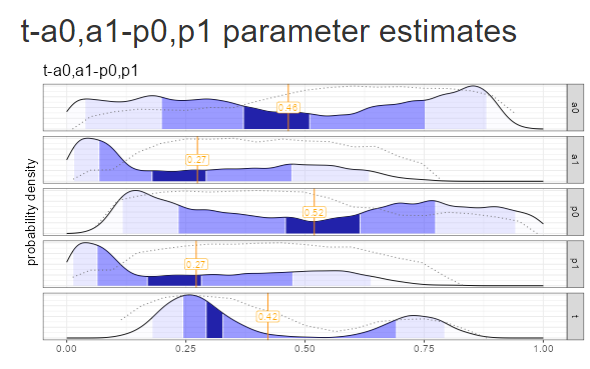
Splitting the model further to include \(p_0, p_1\) as well as \(a_0,a_1\) ends up making the “vacillation” problem worse: there are two clear modes for the \(t\) parameter, and both \(a_0\) and \(p_0\) distributions are all over the place. The addition of the extra \(p\) parameter pushed the model far into non-identifiability.